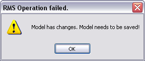

Figure: Updating a Model Element.
If model element changes exist on the repository server, you should perform an update on your model or model elements.
Please note that an update operation only updates committed changes, it does not refresh the lock state of model elements.
To update your model elements with existing changes on the repository server, right-click the model element in the Outline view and choose Update. Please note that this option is only available in case the element is in shared state and not locked for editing.
Figure: Updating a Model Element.
Please note that the model has to be saved before this operation. Otherwise a warning dialog opens.

Figure: Warning
The update option is always available for a process model, but in the update dialog only those elements are displayed, which are in shared mode and thus not locked for editing.
After selecting the Update option, a dialog opens, showing all elements with changes that have been performed remotely and have been committed to the repository. Via the checkboxes the changes on elements that should be updated can be selected explicitly.
Figure: The Update Dialog.
Diagrams containing model elements with updated changes, are updated automatically.
Conflicts on IDs might occur during an update of model element, e.g. if an update results in having two elements with the same ID. These elements will be treated as different elements then with an error indicating the duplicate ID.

Figure: Error indicating duplicate ID.
In case a new composite type with a reference to an XSD file in a source folder is created and committed by another user, it will be checked during an update, if the according XSD file is already present. Otherwise the following dialog opens to inform you about the missing XSD file:
Figure: Dialog to indicate missing XSD File.
The update will be completed successfully anyway by adding the composite type. Adding the appropriate XSD file later restores the reference.
For detailed information on importing XSD files, please refer to section Importing Types of the chapter Defining Structured Data Types.